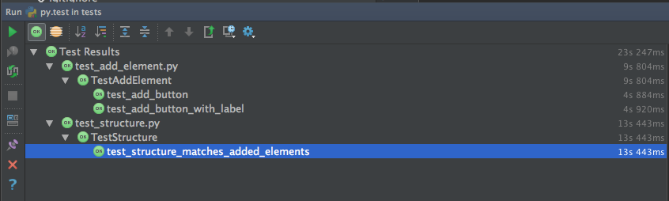

Getting started¶
Requirements¶
Python 3 download
pytest module docs (see install below)
Selenium WebDriver docs (see install below)
Install pytest:
> pip install -U pytest
Install selenium python bindings:
> pip install -U selenium
Running the tests¶
Go to <project dir>/tests
Run:
> pytest
It will automatically discover and run all the tests and output the results:
=== test session starts ===
platform darwin -- Python 3.5.2, pytest-3.0.3, py-1.4.31, pluggy-0.4.0
rootdir: /Users/pavelp/Projects/huma, inifile:
plugins: instafail-0.3.0, xdist-1.14
collected 3 items
tests/test_add_element.py ..
tests/test_structure.py .
=== 3 passed in 29.89 seconds ===
Running tests in IDE¶
Current IDEs support PyTest for running tests out of the box or via some plugin
Following report is from Intellij IDEA
